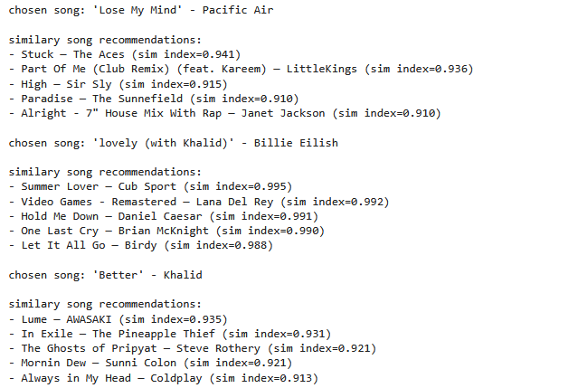

Spotify Song Recommender System
This project is a content-based song recommendation system that leverages Spotify's audio features to suggest tracks with similar characteristics. By analyzing attributes like danceability, energy, and acousticness, the system identifies songs that match the user's selected track, enhancing the music discovery experience.
View on GitHubProject Goal
The primary objective was to develop a system that recommends songs based on the similarity of audio features. Users can input a song, and the system will suggest other tracks that share similar characteristics, providing a seamless way to discover new music aligned with personal preferences.
The Brief & Challenge
With the vast library of songs available on platforms like Spotify, users often find it challenging to discover new music that aligns with their tastes. The challenge was to create a recommendation system that accurately identifies and suggests songs with similar audio features, ensuring the recommendations are both relevant and diverse.
Process & Outcome
The project utilized the "30,000 Spotify Songs" dataset from Kaggle, which includes various audio features for each track. By employing content-based filtering techniques, the system calculates the similarity between songs based on these features. T
The outcome is a functional recommender system that provides users with personalized song suggestions.
Sample Workflow
The image below shows how the system generates personalized song recommendations based on a selected track. Full notebooks and evaluation reports are available on GitHub.
 View Full Project on GitHub